VitualBox操作練習w12 <<
Previous Next >> VitualBox老師課程
Virtualbox重新安裝配置設定w15
1.先下載更新Virtualbox6.0版本，將Virtualbox開啟，新增一個虛擬主機，名稱為ub-2

2.建立虛擬主機開始點選選項


註:變更為500GB

3.點選settings->Network->Bridge..->Rei....

4.按開啟綠色箭頭
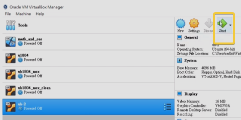
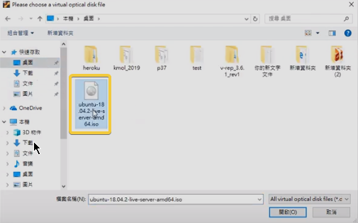
5.依序操作
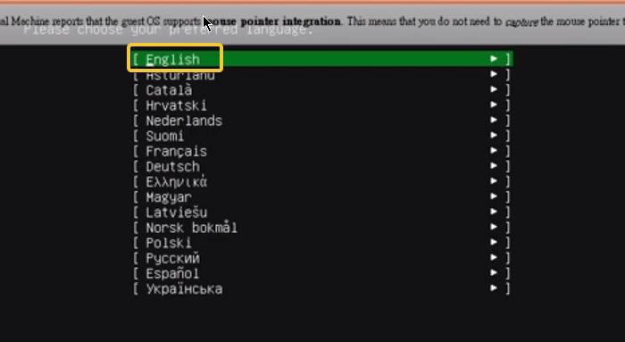
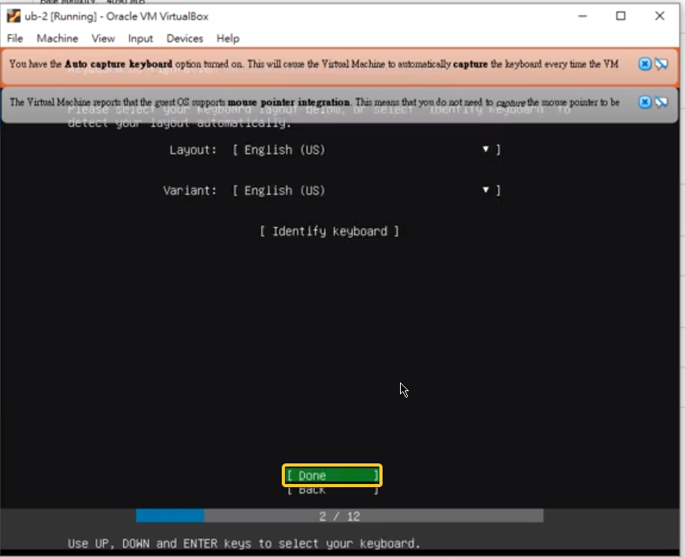
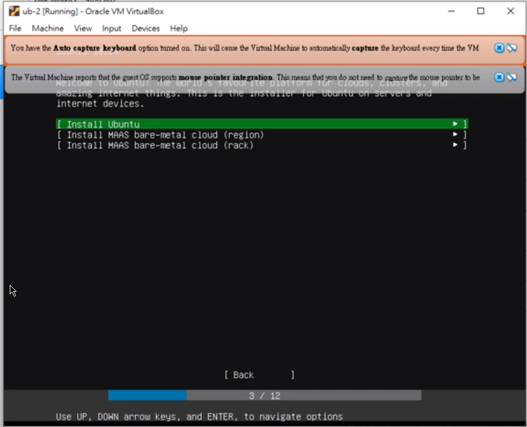
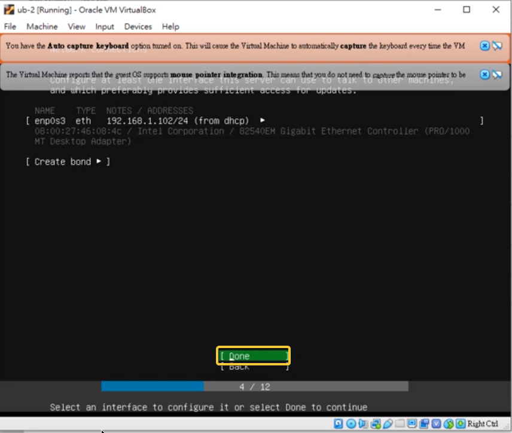
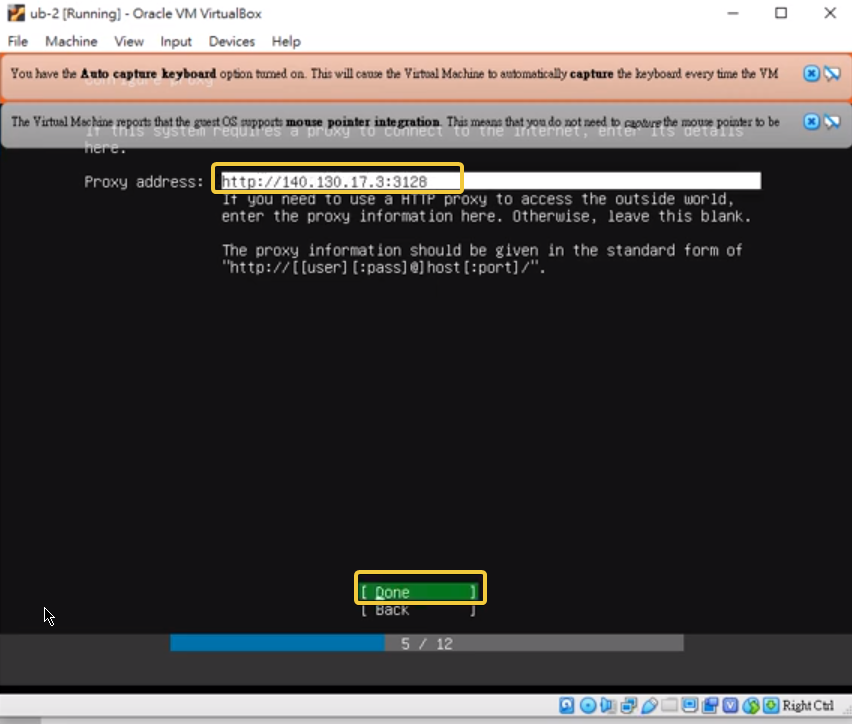
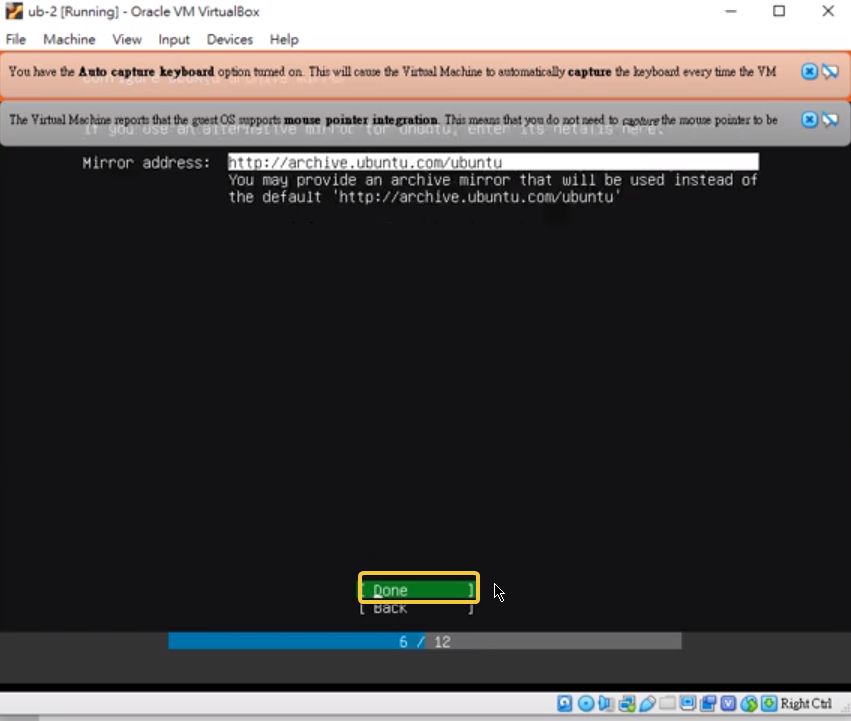
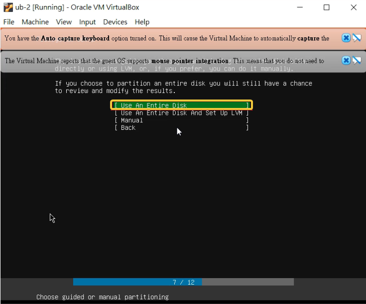
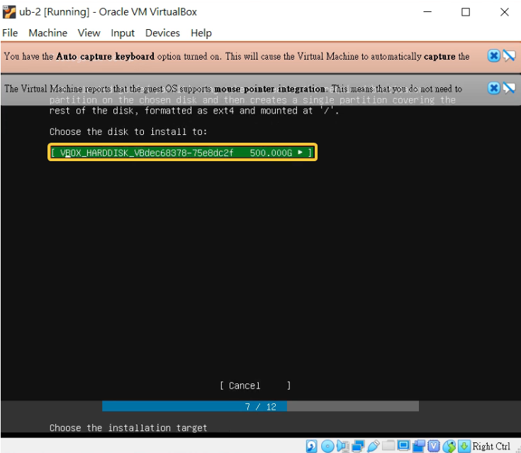
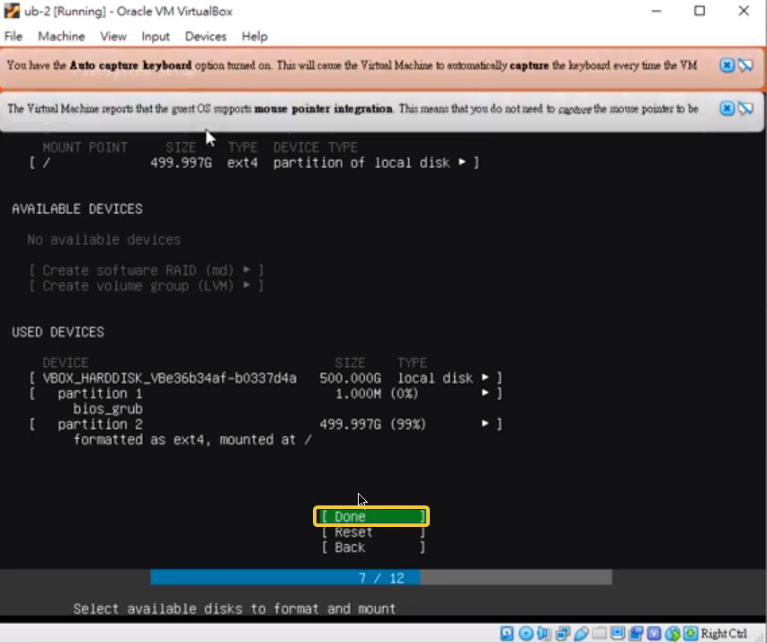
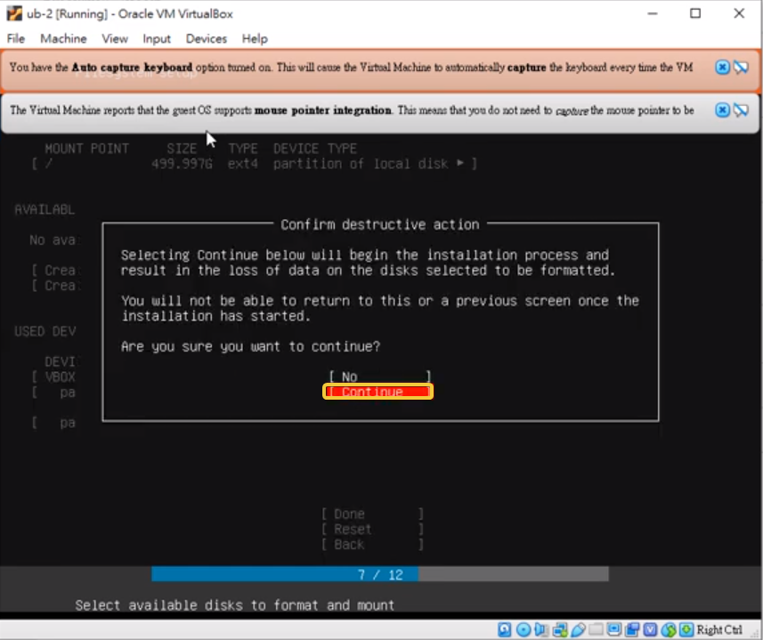
註:設號密碼
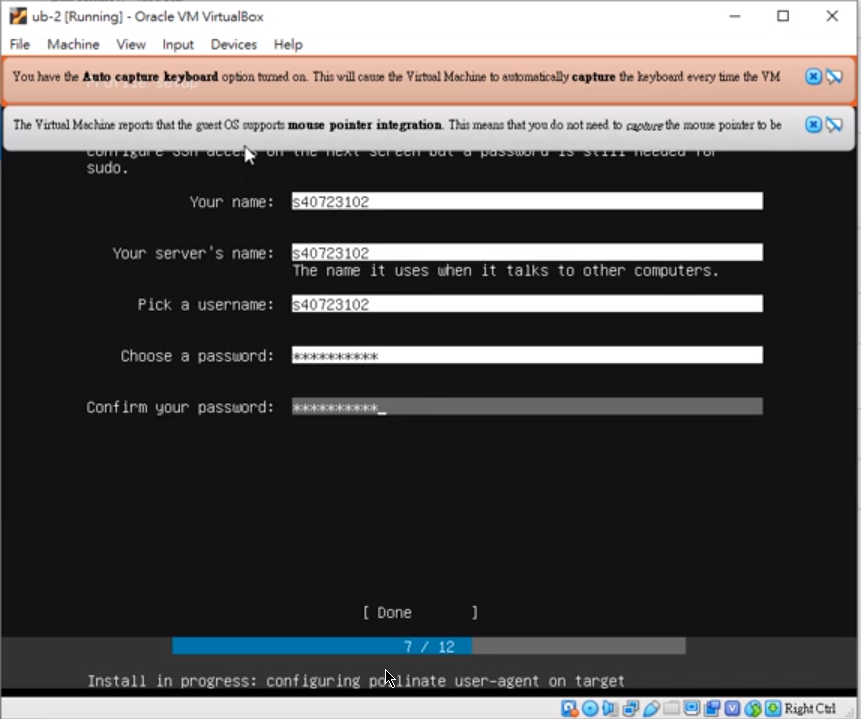
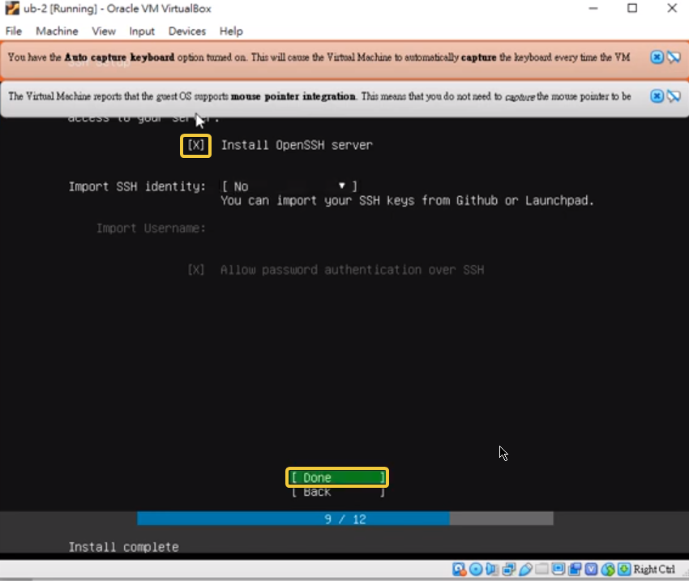
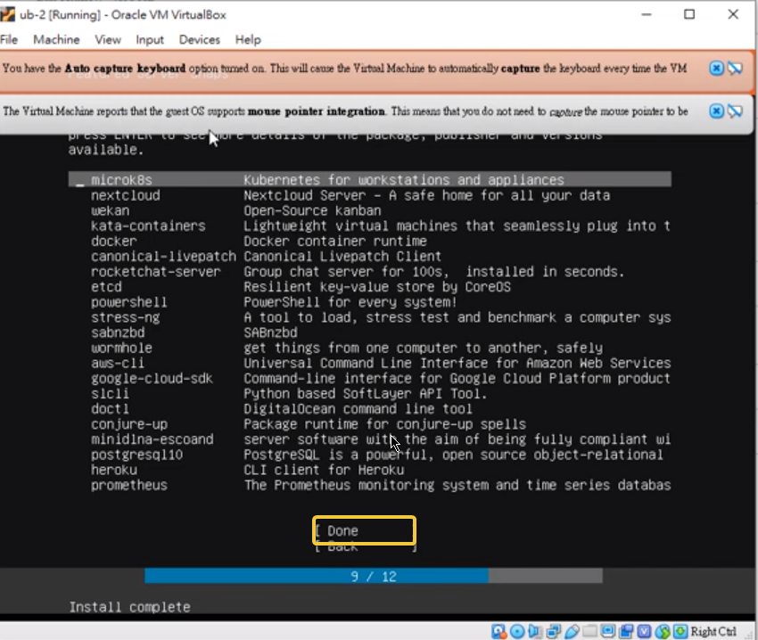
6.完成
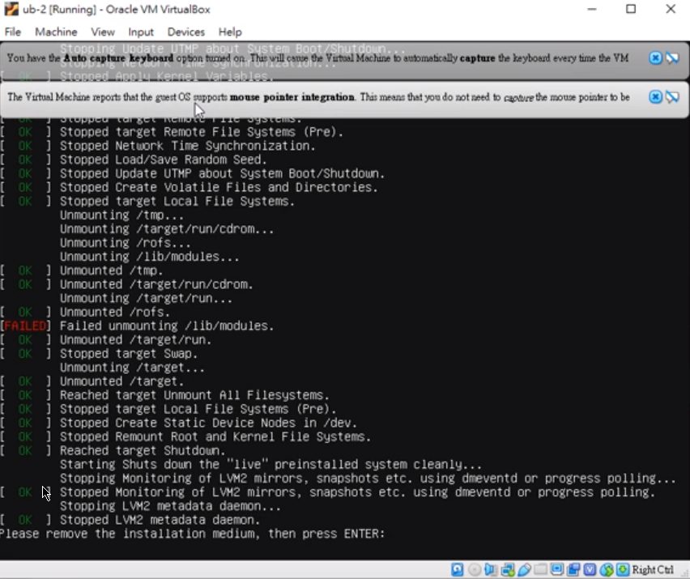
VitualBox操作練習w12 <<
Previous Next >> VitualBox老師課程